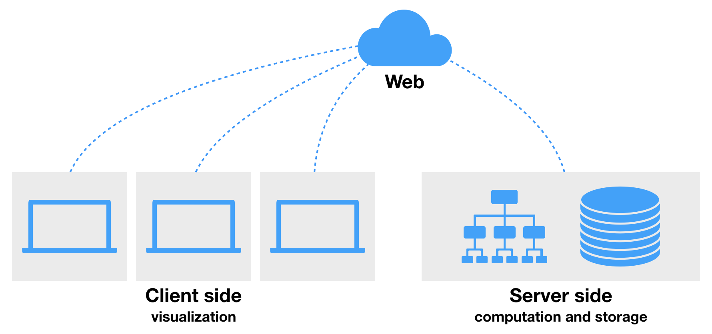

Introduction¶
The mission of CARTA¶
CARTA is the Cube Analysis and Rendering Tool for Astronomy, a new image visualization and analysis tool designed for the ALMA, the VLA, and the SKA pathfinders. As the image size increases drastically with modern telescopes in recent years, viewing an image with a local image viewer or with a remote image viewer via the ssh protocol becomes less efficient. The mission of CARTA is to provide usability and scalability for the future by utilizing modern web technologies and computing parallelization.
Client-Server architecture¶
CARTA uses a client-server architecture which is suitable for visualizing images with large file sizes (GB to TB) easily obtained from ALMA, VLA, or SKA pathfinders observations. It is practically difficult to process such a huge file with personal computer or laptop. By using a client-server architecture, computation and data storage are handled by remote enterprise-class servers or clusters with high performance storage, while processed products are sent to clients only for visualization with modern web features, such as GPU-accelerated rendering. This architecture also enables users to interact with the ALMA and VLA science archives by using CARTA as an interface.
Codebase and releases¶
CARTA is an open-source project. Its source code is available at https://github.com/CARTAvis.
CARTA ultimately will have two distributions: CARTA-server and CARTA-desktop. The former is designed for handling large datasets with remote servers, while the later is suitable for smaller datasets (a few thousand pixels in the x and y dimensions) which can still be handled with personal computer or laptop.
With the current version 1.2 desktop release, CARTA supports two use cases. For users using a laptop or a desktop with a monitor, please use the “Local” version. For users using a remote server via the ssh protocol, please use the “Remote” version. Installation guides for these two versions are provided in the section Installation and configuration.
The release plan and major goals are the following:
- v1.0: Basic image and profile viewing capability (released 29th December 2018)
- v1.1: Initial support of region of interest, ROI (released 2nd May 2019)
- basic ROI for single image including rectangle and ellipse
- ROI statistics
- ROI spectral profile
- ROI histogram
- HDF5-IDIA image format support
- Improved remote version
- Performance and memory usage improvements
- v1.2: performance and usability improvement (current release)
- ROI: polygon and point
- ROI: import/export
- tiled rendering
- profile delivery enhancement
- performance improvement
- usability improvement
- server support improvement
- v1.3: WCS group (Q4 2019)
- WCS group, alignment of multiple images
- contour rendering
- ROI in WCS group
- v1.4: Scripting interface and image analytics tools
- multi-panel image view
- image analytics tools
- scripting interface
- v1.5: Interactive clean
Getting help¶
The CARTA team welcomes any suggestion, feature request, or bug report, to make CARTA better via the CARTA Helpdesk (carta_helpdesk@asiaa.sinica.edu.tw).
Contributors¶
The development of the CARTA project is a joint effort from (in alphabetical order):
- Academia Sinica, Institute of Astronomy and Astrophysics (ASIAA)
- Inter-university Institute for Data Intensive Astronomy (IDIA)
- National Radio Astronomy Observatory (NRAO)
- Department of Physics, University of Alberta
Acknowledgement¶
ASIAA CASA Development Center (ACDC) acknowledges the grant from the Ministry of Science and Technology of Taiwan for the ALMA-NA collaboration.
The Inter-University Institute for Data Intensive Astronomy is a partnership of three South African universities: the University of Cape Town, the University of the Western Cape and the University of Pretoria.
The National Radio Astronomy Observatory is a facility of the National Science Foundation operated under cooperative agreement by Associated Universities, Inc.
The Department of Physics at the University of Alberta has contributed to the CARTA project thanks to support from the National Radio Astronomy Observatory under an ALMA Development Project and from the Canada Foundation for Innovation as part of the Canadian Initiative for Radio Astronomy Data Analysis (CIRADA).
CARTA is mainly built in C++, TypeScript, and JavaScript, and with the following third-party libraries:
- AST: http://starlink.eao.hawaii.edu/starlink/AST
- Blueprint: https://blueprintjs.com
- casacore: https://casacore.github.io
- CASA source code: https://casa.nrao.edu/index.shtml
- Chart.js: https://www.chartjs.org
- Electron: https://electronjs.org
- GoldenLayout: https://golden-layout.com
- jsoncpp: https://github.com/open-source-parsers/jsoncpp
- MobX: https://mobx.js.org
- MongoDB: https://www.mongodb.com
- React: https://reactjs.org
- TBB: https://www.threadingbuildingblocks.org
The source code of CARTA is hosted on Github.
Copyright and License¶
Copyright (C) 2018-2019 ASIAA, IDIA, NRAO, and Department of Physics, University of Alberta. This program is free software; you can redistribute it and/or modify it under the terms of the GNU General Public License version 3 as published by the Free Software Foundation.